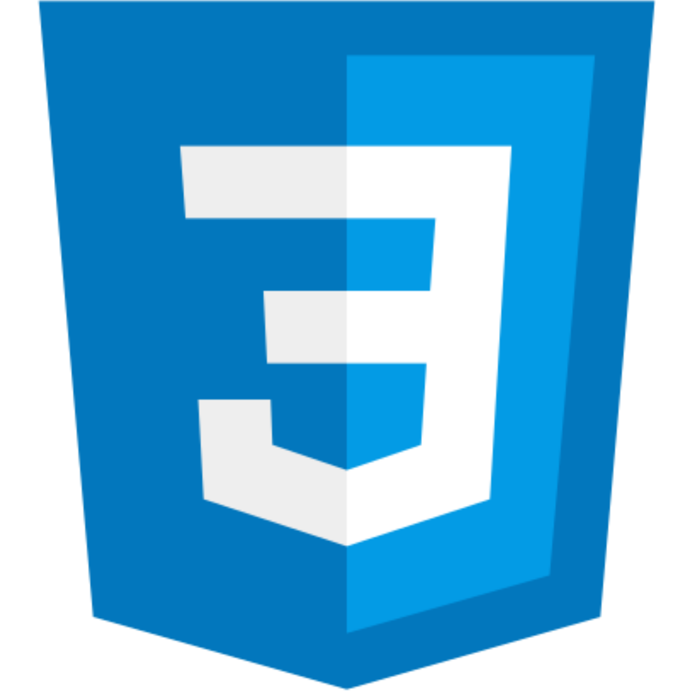
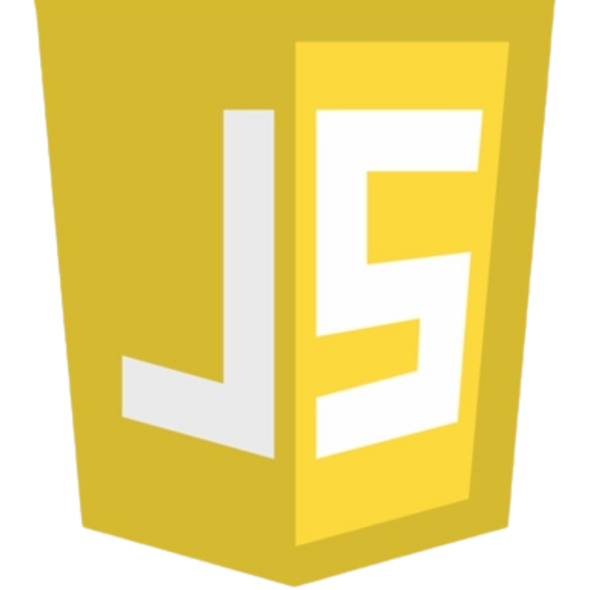

Integr8 Software Solutions, Inc.
Web
Figma
Marketing


Whether you're looking for a designer, have a project in mind, or simply want to connect, I'd love to hear from you.
Get in touchI've worked with Integr8 and ePeople to build digital presences that communicate clearly and convert. I'm looking for a team where I can keep growing and do work that matters.


Far Eastern University Cavite, MetroGate Silang Estates, Silang, Cavite
Far Eastern University Cavite, MetroGate Silang Estates, Silang, Cavite
Integr8 Software Solutions, Inc., General Trias City, Cavite
Industry-recognized certifications that strengthen my foundation in IT, design, and animation.






Thanks for taking the time to learn more about me. If you'd like to chat about design, opportunities, or ideas, I'd love to hear from you.
Get in touchIntegr8 Software Solutions, Inc. is an systems provider company in the IT industry that offers a variety of systems such as: Accounting Systems, Inventory Management Systems, Point-of-Sale (POS) Systems, Enterprise Resource Planning (ERP) Systems, Production Systems, Payroll System and HRIS. Their clients are SMEs and they needed to replace an old site. Before this project, they have an existing outdated site that is static. That gap mattered because nowadays websites are a significant way for people to get to know a brand.
Most marketing sites fail for the same reason: visitors decide whether to stay before they've read a single sentence. The job wasn't "design a website." It was making a stranger understand who Integr8 is and what they offer before they think about leaving.
As an intern on the project, I designed the site end to end from layout, landing pages, and lots of product showcases working from a draft created by a senior team member.

First impressions online are fast—a visitor lands on a page and decides within seconds whether to stay. The Integr8 website needed to communicate who the company was and what solutions it offered, but its existing layout felt visually outdated and didn't reflect the modern image of a software company.
As part of the redesign process, I reviewed competitor websites, including Square, to understand how established technology companies communicated their products and structured information. A common pattern I observed was the use of clear visual hierarchy, generous spacing, and concise messaging that helped visitors understand the business before diving into product details.
The competitor research reinforced one key idea: visitors should immediately understand what a company does before they're asked to explore its products. That became the backbone of my redesign. I structured the homepage to introduce Integr8's value proposition first, then gradually guide users through its software solutions, product features, and supporting information in a logical sequence.
The redesign also aligned with our senior team member's vision of giving the website a more modern appearance, complementing the team's decision to rebuild the site using React.
Homepage headline and hierarchy
The previous homepage emphasized visuals more than communication. I reorganized the content so visitors would first understand what Integr8 offers, followed by supporting sections that introduced its products and capabilities. This creates a smoother reading flow and helps users quickly determine whether the company's services meet their needs.

Product and service showcase
One of the largest parts of the project was designing the four individual Product pages—including their Modules and Features sections. To make these pages easier to navigate, I grouped related information into clearly defined sections with consistent layouts and visual patterns. This improves scannability while making it easier for visitors to compare products and locate relevant information.

Visual system
Rather than changing Integr8's brand identity, I modernized how it was presented. I introduced a cleaner layout, improved spacing, stronger typographic hierarchy, and a more consistent visual system across every page. These decisions create a more professional appearance while improving readability and maintaining brand consistency throughout the website.
This project taught me that modern design isn't defined by visual trends—it's defined by how clearly it communicates. Researching competitor websites showed me that successful interfaces aren't necessarily the most visually complex; they're the ones that make information easy to understand within a visitor's first few seconds on the page. Since this project covered nearly the entire marketing website, it also taught me the importance of maintaining consistency across multiple pages while designing a cohesive user experience.


ePeople Manpower Services, Inc. provides workforce solutions for businesses across the Philippines, offering recruitment, payroll, training, and compliance services for industries such as manufacturing, IT, accounting, and human resources.
Visitors arriving on ePeople's website generally fall into two groups: businesses searching for workforce solutions and job seekers looking for career opportunities. Although their goals differ, both audiences need to trust the company within their first few moments on the site.
The previous website communicated the company's services, but its presentation felt visually cluttered and lacked the professional appearance expected from a company responsible for recruitment, payroll, and compliance. To better understand how professional service companies communicated credibility online, I reviewed competitor websites and observed common patterns in layout, spacing, content organization, and visual hierarchy. Those observations informed many of the structural decisions made throughout the redesign.
A workforce solutions company sells trust before it sells services. Businesses looking to outsource recruitment or payroll need confidence that they're partnering with a credible organization, while job seekers need reassurance that they're applying through a legitimate company.

* Contributed to redesigning the Home page.
* Designed the Services and Company Profile pages in Elementor.
* Reorganized content into clearly scannable sections with stronger visual hierarchy.
* Refined typography, spacing, and color usage to create a more professional and cohesive interface.
* Designed responsive layouts that adapt across desktop, tablet, and mobile devices.
Content hierarchy and flow
The Services and Company Profile pages were reorganized into clearly defined sections instead of presenting information as long, uninterrupted blocks of content. Related information was grouped together under descriptive headings, allowing visitors to quickly understand ePeople's offerings before exploring additional details. This makes the pages easier to scan while creating a more deliberate journey through the content.
Professional visual language
Rather than relying on decorative elements, the redesign focused on consistency. Improved spacing, typography, and a more restrained use of color created a cleaner visual system that better reflects the professionalism expected of a workforce solutions provider. The goal wasn't simply to modernize the appearance—it was to strengthen visitors' confidence in the company.
Designing within Elementor
Because the website was built directly in Elementor, every design decision had to work within the capabilities of the page builder. This encouraged practical thinking—creating layouts that were both visually effective and realistic to build, while maintaining consistency across the redesigned pages.
Responsive experience
The redesigned pages were created to remain usable across desktop, tablet, and mobile devices. As content shifts to smaller screens, sections stack naturally while preserving hierarchy and readability, ensuring that both clients and job seekers can browse the site comfortably regardless of device.

This project taught me that credibility is built through consistency. A website doesn't feel professional because it uses modern design trends—it feels professional when every page communicates information clearly, follows a cohesive visual system, and helps visitors understand the business without unnecessary effort.
Designing directly in Elementor also taught me to think beyond visual concepts and consider the practical constraints of implementation. Creating effective designs within a live website builder reinforced the importance of balancing creativity with technical feasibility.
The brief: a small local business helping tourists and locals find restaurants, hotels, events, and activities in a city they don't know well. Most of that business's foot traffic depends on people finding it fast, with no prior context. The academic assignment gave me the scenario while everything else including research, structure, and decisions was on me.
The real problem wasn't sorting four categories of information. It was designing for someone who has no idea about the city and isn't going to put in effort to learn it. Every layout choice had to hold up against that. Also, since the brief didn't specify a country and I needed to narrow the site to just one, I chose New Zealand to showcase.


Solo, brief-to-prototype, in Figma. I looked at how established platforms — Google Maps, Airbnb, Tripadvisor — handle discovery for people with zero local context, then checked my direction against instructor feedback at each stage. The homepage went through three structural rebuilds before the hierarchy held up. The hardest constraint was using one card component to represent four completely different content types: restaurants, hotels, events, and activities without feeling like four different products bolted together.
Looking at how the reference apps front-load search and treat categories as filters, not destinations, showed me the gap in my early drafts: I was designing categories like a menu to browse, when tourists actually arrive already searching for something specific. Instructor feedback on my first pass confirmed it. They said the layout was organized around what the business offered, not around what a visitor was trying to do.
The obvious layout only looks obvious after you've already built the wrong one. That's where I learned to prototype with intention: check the direction against something outside your own head before building further on it. Everything I've done since has come from that habit.
NomNom started as a Figma tutorial on YouTube — a food ordering app UI originally called Tomato. I didn't follow the source design as a template; I used its structure as scaffolding and built my own product concept, branding, and detail on top of it. The flow: a home screen with the product lineup, a detail page per item, and a checkout screen to complete the order.
Working from the original Tomato design made the gap obvious: the source treated the three screens as a generic ordering flow, since it wasn't attached to any real product concept. Rebuilding it as NomNom meant every screen had to earn its identity. If the home screen, detail page, and checkout looked strong but generic, the exercise would have failed even with clean UI. So, the real work moved into branding decisions — is this playful or premium, does the checkout feel fast or ceremonious? The parts which the tutorial didn't hand me.
Solo, in Figma, following the tutorial for screen structure and flow logic so I could put my attention somewhere the tutorial didn't cover: product concept and visual identity. That meant building out NomNom's own branding such as naming, color, typography, and rethinking what each screen needed to communicate for this specific concept, not the tutorial's.

A strong visual identity can carry a simple flow. Keeping a project to three screens with one job each isn't a shortcut when the structure comes from somewhere else. It's a decision to spend your effort on what the tutorial doesn't teach: making the thing feel like a product someone made on purpose.